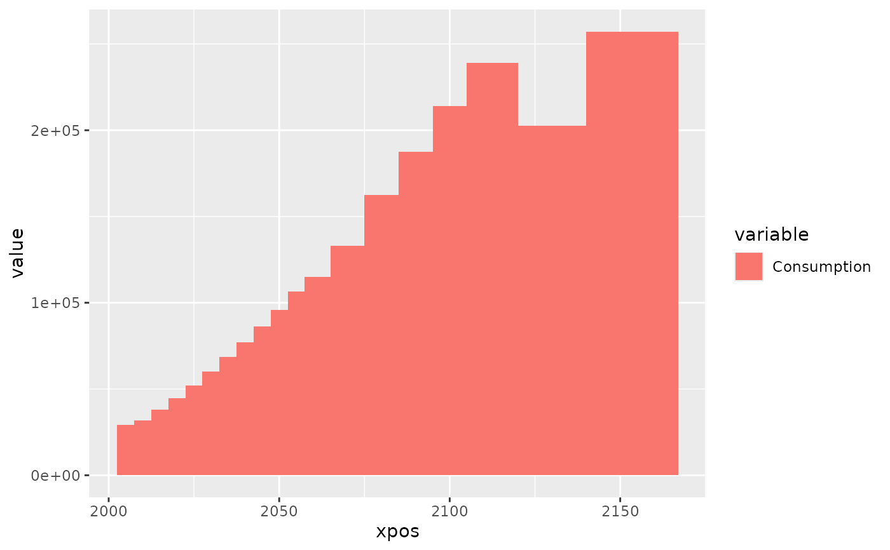
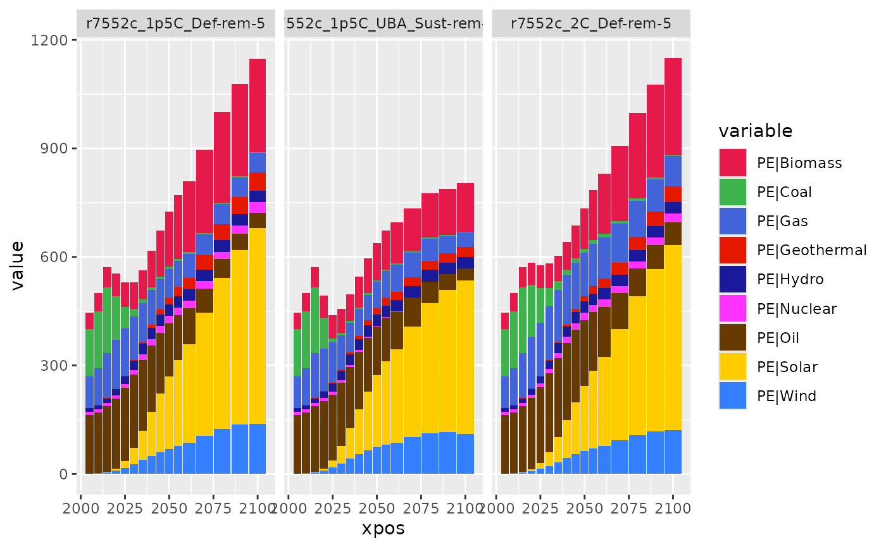
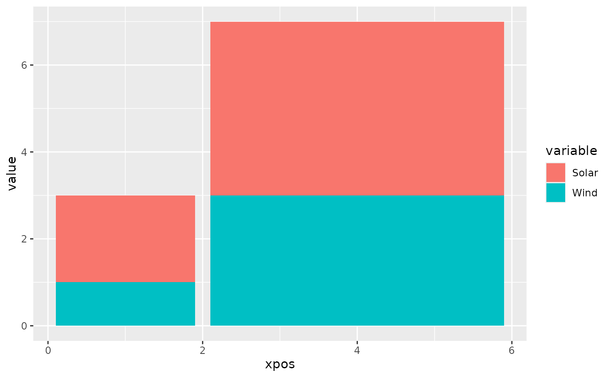

Utility functions for plotting stacked bars with variable widths for displaying time-series data with variable time steps (like REMIND data).
Usage
add_timesteps_columns(
data,
timesteps,
periods = "period",
gaps = 0,
interval_shift = c(-0.5, 0.5),
timesteps_period = "period",
timesteps_interval = "year"
)
add_remind_timesteps_columns(data, periods = "period", gaps = 0)
ggplot_bar_vts(
data,
timesteps,
mapping = aes(x = !!sym("period"), y = !!sym("value"), fill = !!sym("variable")),
gaps = 0.1,
position_fill = FALSE,
interval_shift = c(-0.5, 0.5),
timesteps_period = "period",
timesteps_interval = "year"
)
ggplot_bar_remind_vts(
data,
mapping = aes(x = !!sym("period"), y = !!sym("value"), fill = !!sym("variable")),
gaps = 0.1,
position_fill = FALSE
)Arguments
- data
A data frame.
- timesteps
A data frame like
remind_timestepswith columnsperiod,year, andweight, whereweightdetermines which share ofyearbelongs toperiod.- periods
The column holding the period information in
data(either a string or an object). Defaults to'period'.- gaps
Gaps between bars as a fraction of the smallest bar width. Defaults to 0.1 (e.g. 0.1 * 5 years = 0.5 years).
- interval_shift
numeric of length 2. Shifts added to the interval fix point to obtain the beginning and end of time interval. If the interval for period 1 should be
[0.5, 1.5],interval_shiftshould be set toc(-0.5, 0.5)(default). If the interval for period 1 should be[0, 1],interval_shiftshould be set toc(-1, 0).- timesteps_period
character string giving the column name of the
periodin thetimestepsdata frame. Defaults to'period'.- timesteps_interval
character string giving the column name of the time interval in the
timestepsdata frame. Defaults to'year'.- mapping
aes()mapping with aestheticsx,y, and optionallyfill.- position_fill
If
TRUE, stacks bars and standardises each stack to have constant height.
Value
add_timesteps_columns() and add_remind_timesteps_columns() return
a data frame.
ggplot_bar_vts() and ggplot_bar_remind_vts() return a
ggplot()-like object.
Details
add_timesteps_columns() calculates the x-axis position and width of bars
based on the information in timesteps and joins it to data.
add_remind_timesteps_columns() uses the remind_timesteps data frame.
ggplot_bar_vts() produces a bar plot with bars positioned according to
timesteps. ggplot_bar_remind_vts() uses the remind_timesteps data
frame.
Examples
require(tidyverse)
# some example data
(data <- quitte_example_data %>%
filter(first(scenario) == scenario,
last(region) == region,
first(variable) == variable))
#> # A tibble: 19 × 7
#> model scenario region variable unit period value
#> <fct> <fct> <fct> <fct> <fct> <int> <dbl>
#> 1 REMIND r7552c_1p5C_Def-rem-5 World Consumption billi… 2005 2.93e4
#> 2 REMIND r7552c_1p5C_Def-rem-5 World Consumption billi… 2010 3.17e4
#> 3 REMIND r7552c_1p5C_Def-rem-5 World Consumption billi… 2015 3.82e4
#> 4 REMIND r7552c_1p5C_Def-rem-5 World Consumption billi… 2020 4.48e4
#> 5 REMIND r7552c_1p5C_Def-rem-5 World Consumption billi… 2025 5.21e4
#> 6 REMIND r7552c_1p5C_Def-rem-5 World Consumption billi… 2030 6.02e4
#> 7 REMIND r7552c_1p5C_Def-rem-5 World Consumption billi… 2035 6.85e4
#> 8 REMIND r7552c_1p5C_Def-rem-5 World Consumption billi… 2040 7.72e4
#> 9 REMIND r7552c_1p5C_Def-rem-5 World Consumption billi… 2045 8.61e4
#> 10 REMIND r7552c_1p5C_Def-rem-5 World Consumption billi… 2050 9.57e4
#> 11 REMIND r7552c_1p5C_Def-rem-5 World Consumption billi… 2055 1.06e5
#> 12 REMIND r7552c_1p5C_Def-rem-5 World Consumption billi… 2060 1.15e5
#> 13 REMIND r7552c_1p5C_Def-rem-5 World Consumption billi… 2070 1.33e5
#> 14 REMIND r7552c_1p5C_Def-rem-5 World Consumption billi… 2080 1.62e5
#> 15 REMIND r7552c_1p5C_Def-rem-5 World Consumption billi… 2090 1.88e5
#> 16 REMIND r7552c_1p5C_Def-rem-5 World Consumption billi… 2100 2.14e5
#> 17 REMIND r7552c_1p5C_Def-rem-5 World Consumption billi… 2110 2.39e5
#> 18 REMIND r7552c_1p5C_Def-rem-5 World Consumption billi… 2130 2.03e5
#> 19 REMIND r7552c_1p5C_Def-rem-5 World Consumption billi… 2150 2.57e5
# adding individual timesteps
add_timesteps_columns(data, remind_timesteps)
#> # A tibble: 19 × 9
#> model scenario region variable unit period value xpos width
#> <fct> <fct> <fct> <fct> <fct> <dbl> <dbl> <dbl> <dbl>
#> 1 REMIND r7552c_1p5C_… World Consump… bill… 2005 2.93e4 2005 5
#> 2 REMIND r7552c_1p5C_… World Consump… bill… 2010 3.17e4 2010 5
#> 3 REMIND r7552c_1p5C_… World Consump… bill… 2015 3.82e4 2015 5
#> 4 REMIND r7552c_1p5C_… World Consump… bill… 2020 4.48e4 2020 5
#> 5 REMIND r7552c_1p5C_… World Consump… bill… 2025 5.21e4 2025 5
#> 6 REMIND r7552c_1p5C_… World Consump… bill… 2030 6.02e4 2030 5
#> 7 REMIND r7552c_1p5C_… World Consump… bill… 2035 6.85e4 2035 5
#> 8 REMIND r7552c_1p5C_… World Consump… bill… 2040 7.72e4 2040 5
#> 9 REMIND r7552c_1p5C_… World Consump… bill… 2045 8.61e4 2045 5
#> 10 REMIND r7552c_1p5C_… World Consump… bill… 2050 9.57e4 2050 5
#> 11 REMIND r7552c_1p5C_… World Consump… bill… 2055 1.06e5 2055 5
#> 12 REMIND r7552c_1p5C_… World Consump… bill… 2060 1.15e5 2061. 7.5
#> 13 REMIND r7552c_1p5C_… World Consump… bill… 2070 1.33e5 2070 10
#> 14 REMIND r7552c_1p5C_… World Consump… bill… 2080 1.62e5 2080 10
#> 15 REMIND r7552c_1p5C_… World Consump… bill… 2090 1.88e5 2090 10
#> 16 REMIND r7552c_1p5C_… World Consump… bill… 2100 2.14e5 2100 10
#> 17 REMIND r7552c_1p5C_… World Consump… bill… 2110 2.39e5 2112. 15
#> 18 REMIND r7552c_1p5C_… World Consump… bill… 2130 2.03e5 2130 20
#> 19 REMIND r7552c_1p5C_… World Consump… bill… 2150 2.57e5 2154. 27
# adding remind timesteps with gaps
add_remind_timesteps_columns(data, gaps = 0.1)
#> # A tibble: 19 × 9
#> model scenario region variable unit period value xpos width
#> <fct> <fct> <fct> <fct> <fct> <dbl> <dbl> <dbl> <dbl>
#> 1 REMIND r7552c_1p5C_… World Consump… bill… 2005 2.93e4 2005 4.5
#> 2 REMIND r7552c_1p5C_… World Consump… bill… 2010 3.17e4 2010 4.5
#> 3 REMIND r7552c_1p5C_… World Consump… bill… 2015 3.82e4 2015 4.5
#> 4 REMIND r7552c_1p5C_… World Consump… bill… 2020 4.48e4 2020 4.5
#> 5 REMIND r7552c_1p5C_… World Consump… bill… 2025 5.21e4 2025 4.5
#> 6 REMIND r7552c_1p5C_… World Consump… bill… 2030 6.02e4 2030 4.5
#> 7 REMIND r7552c_1p5C_… World Consump… bill… 2035 6.85e4 2035 4.5
#> 8 REMIND r7552c_1p5C_… World Consump… bill… 2040 7.72e4 2040 4.5
#> 9 REMIND r7552c_1p5C_… World Consump… bill… 2045 8.61e4 2045 4.5
#> 10 REMIND r7552c_1p5C_… World Consump… bill… 2050 9.57e4 2050 4.5
#> 11 REMIND r7552c_1p5C_… World Consump… bill… 2055 1.06e5 2055 4.5
#> 12 REMIND r7552c_1p5C_… World Consump… bill… 2060 1.15e5 2061. 7
#> 13 REMIND r7552c_1p5C_… World Consump… bill… 2070 1.33e5 2070 9.5
#> 14 REMIND r7552c_1p5C_… World Consump… bill… 2080 1.62e5 2080 9.5
#> 15 REMIND r7552c_1p5C_… World Consump… bill… 2090 1.88e5 2090 9.5
#> 16 REMIND r7552c_1p5C_… World Consump… bill… 2100 2.14e5 2100 9.5
#> 17 REMIND r7552c_1p5C_… World Consump… bill… 2110 2.39e5 2112. 14.5
#> 18 REMIND r7552c_1p5C_… World Consump… bill… 2130 2.03e5 2130 19.5
#> 19 REMIND r7552c_1p5C_… World Consump… bill… 2150 2.57e5 2154. 26.5
# plotting individual timesteps without gaps
ggplot_bar_vts(data, remind_timesteps, gaps = 0)

# plotting remind timegaps, using further ggplot2 functions
ggplot_bar_remind_vts(
data = quitte_example_data %>%
filter(scenario %in% levels(quitte_example_data$scenario)[1:3],
last(region) == region,
grepl('PE\\|', variable),
2100 >= period)) +
scale_fill_manual(
values = mip::plotstyle(grep('^PE\\|',
levels(quitte_example_data$variable),
value = TRUE))) +
facet_wrap(~ scenario)
#>

# another data set with a different time column
data2 <- data.frame(variable = c('Wind', 'Solar', 'Wind', 'Solar'),
tau = c(1,1,2,2),
value = 1:4)
# some timesteps dataframe with hourly data
timesteps <- data.frame(tau = c(rep(1,2),rep(2,4)),
hour = 1:6,
weight = 1)
# plotting with different timesteps than periods and years
ggplot_bar_vts(data2, timesteps,
mapping = aes(tau, value, group = variable, fill = variable),
timesteps_period = 'tau',
timesteps_interval = 'hour',
interval_shift = c(-1,0))
